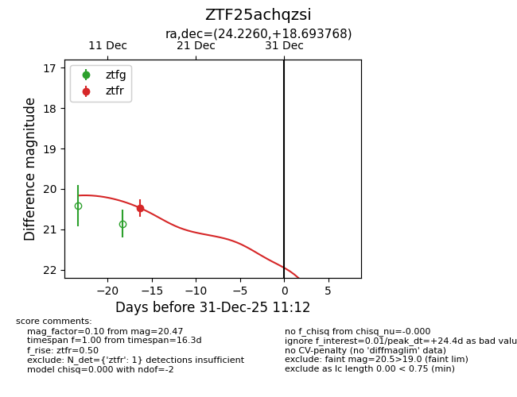
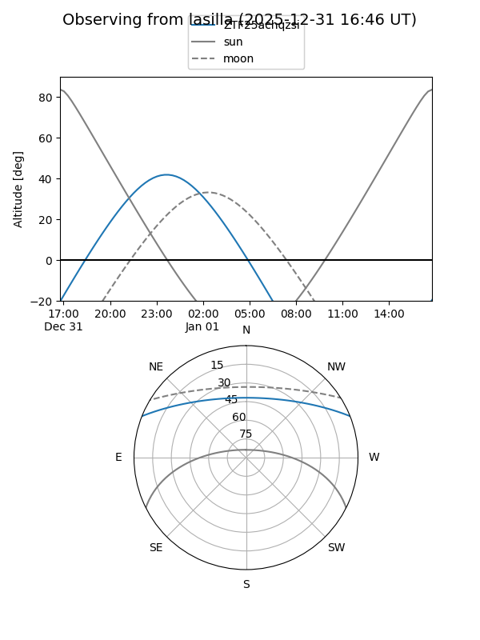
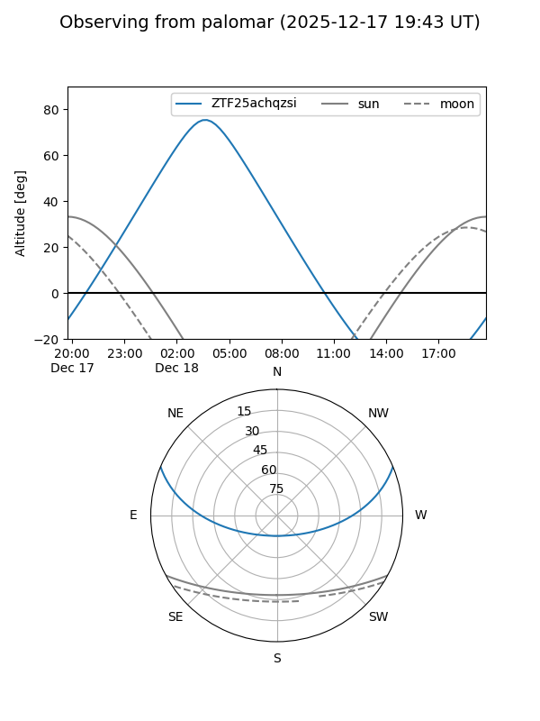

ZTF25achqzsi
Target ZTF25achqzsi at 2026-01-09 12:49
Aliases and brokers:
FINK: link
Lasair: link
ALeRCE: link
alt names
ZTF25achqzsi (ztf,fink_ztf)
Coordinates:
equatorial (ra, dec) = 24.2260,+18.69377
equatorial (HMS+DMS) = 01:36:54.23,+18:41:37.57
galactic (l, b) = (137.6895,-42.87137)
Flags:
Photometry:
last ztfr=20.47
1 ztfr detections
Lightcurve

Visibility


Additional plots